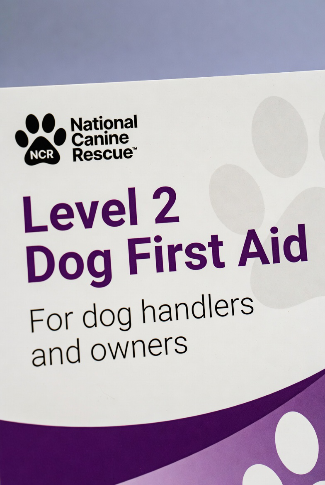

Professional courses delivered by a qualified instructor from Noodle’s Canine Rescue
The courses may contain the following depending on the level to which you require.
Throughout the course, you will explore essential topics such as pet first aid and the law, understanding the role of veterinarians in emergencies, and recognising when veterinary care is required.
You will learn how to keep pets safe during emergency situations, identify signs of pain in pets, and conduct basic health checks to establish a baseline for their well-being.
Additionally, you will master the technique of taking a pulse and understand the importance of pet first aid kits in emergency response.
The course will extensively cover CPR, pet accidents, and first aid, including breathing and respiratory problems. You will be introduced to pet CPR, learning the steps and techniques necessary to resuscitate a pet in cardiac or respiratory arrest.
Through practical demonstrations and hands-on training, you will gain the confidence to perform pet CPR effectively in critical situations. Furthermore, you will delve into specific medical conditions that commonly affect pets, enabling you to recognise signs, provide immediate relief, and understand when specialised veterinary care is necessary.
The course will also focus on different types of bleeding and teach you how to control and manage bleeding through dressings, bandages, and the application of pet wrap bandages.
You will develop proficiency in addressing paw problems, nail and claw injuries, as well as bandaging the ear and tail in case of injuries.
In addition to these critical topics, the course will cover dehydration in pets, high temperatures, and heatstroke, as well as the treatment of hypothermia.
You will gain insights into recognising and responding to these potentially life-threatening situations when providing emergency services.
By the end of this course, you will be equipped with a comprehensive understanding of emergency pet services and first aid. You will possess the knowledge and skills necessary to provide immediate assistance in various emergency scenarios, including CPR, stabilising fractures, addressing spinal injuries, and managing medical conditions.
Join us on this educational journey and become a competent and compassionate provider of emergency services for pets in need.

This course is aimed at anyone who requires a course in first aid for dogs. It is ideal for dog owners or dog professionals. Understanding basic first aid for your dog will give you the skills to assist them and prevent them from getting worse before your vet gives professional help. The certificate is valid for three years.
This course is aimed at people who work with outdoor working dogs. It is ideal for dog owners or dog professionals. Understanding basic first aid for your dog will give you the skills to assist them and prevent them from getting worse before professional help is given by your vet. The certificate is valid for 3 years.
Please contact us if you have a group as we can offer a group discount.
Enquire / Book Level 2This course is designed to provide emergency service professionals with the knowledge and skills necessary to effectively respond to pet-related emergencies. As an emergency service provider, it is crucial to be equipped with the tools and understanding to provide immediate assistance to pets in distress. This course aims to empower you to confidently handle various emergency situations involving pets and ensure their well-being.
Please contact us if you have a group as we can offer a group discount.
Enquire / Book Level 2This course is approved by NASDU for the requirement of pet first aid in their standards. First aid is important to know for your security dog not only to comply with associations and local authorities but also for animal welfare and to help a dog in need. The nature of working with dogs will pose a risk that they may be harmed in the course of their work or transport.
Please contact us if you have a group as we can offer a group discount.
Enquire / Book Level 2Classroom Training Course
Please contact us if you have a group as we can offer a group discount.
Enquire / Book Level 3Classroom Training Course
Learn the techniques for a wide range of emergencies your pets may get into with this engaging ProTrainings Course run by Noodles Canine Rescue.
This is a blended course. Part 1 is purchased online for £34.95 + VAT and completed at home (around 8 hours, video tutorials and online exams). Part 2 is in the classroom at £120 per person (around 8 hours including breaks, with demonstrations and practical hands-on first aid).
£100 for volunteers of Noodle’s Canine Rescue (classroom part).
Enquire / Book Level 3This is a blended course. Part 1 is purchased online for £34.95 + VAT and completed at home (around 8 hours, video tutorials and online exams). Part 2 is in the classroom at £120 per person (around 8 hours including breaks, with demonstrations and practical hands-on first aid).
£100 for volunteers of Noodle’s Canine Rescue (classroom part).
Enquire / Book Level 3All courses are delivered by a qualified instructor from the Noodle’s Canine Rescue team who brings real operational experience from canine search and rescue on the Isle of Man.
Group bookings, custom training and volunteer subsidies available.
Contact us to discuss dates, pricing →